G01 · M1
Yên Lab · Sprite review
Bộ ảnh cần duyệt, chưa gắn vào gameplay production. Có thể có viền giấy và chi tiết cần crop lại.
Sách lật · 8 frame
Frame 1 / 8
Chỉ xem animation khi bấm. Chế độ giảm chuyển động hiển thị khung tĩnh.
20 mini games
G02 · M2
Căng rồi thả
Nhiều trạng thái trong một ảnh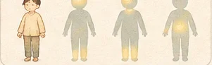
G03 · M4
Quét người tìm căng thẳng
Nhiều trạng thái trong một ảnh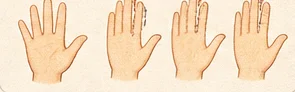
G04 · M4
Ngón tay biết thở
Nhiều trạng thái trong một ảnhG05 · M3
Thám tử hiện tại
Minh họa tĩnh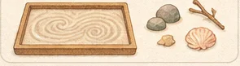
G06 · M4
Vườn cát không mục tiêu
Minh họa tĩnh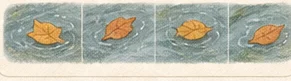
G07 · M3
Lá trôi, nghĩ trôi
Nhiều trạng thái trong một ảnhG08 · M4
Ngồi nhìn mây
Minh họa tĩnh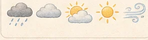
G09 · M3
Gọi tên cơn bực
Nhiều trạng thái trong một ảnh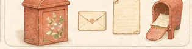
G10 · M4
Hòm thư không gửi
Minh họa tĩnh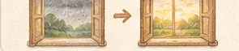
G11 · M4
Đổi góc nhìn
Minh họa tĩnh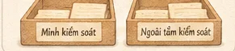
G12 · M4
Điều mình kiểm soát
Minh họa tĩnh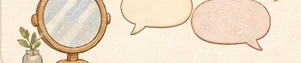
G13 · M4
Nói với mình tử tế
Minh họa tĩnh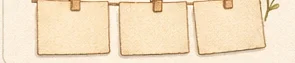
G14 · M2
Ba điều nhỏ xíu
Minh họa tĩnh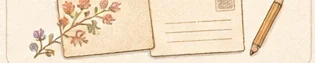
G15 · M4
Gửi một điều tử tế
Minh họa tĩnh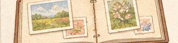
G16 · M4
Album chuyện vui
Minh họa tĩnh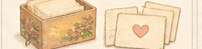
G17 · M4
Việc tốt bé tẹo
Minh họa tĩnhG18 · M4
Đi dạo trong rừng
Nhiều trạng thái trong một ảnh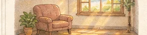
G19 · M4
Một phút không làm gì
Minh họa tĩnhG20 · M4
Lắng nghe Yên
Minh họa tĩnh18 sprite dùng chung
book closed
book open
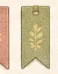
bookmark
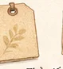
card
cuc yen idle
cuc yen look
cuc yen point
cuc yen rest
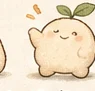
cuc yen wave
envelope closed
envelope open
leaf
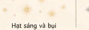
light dust
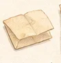
paper fold
paper note
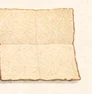
paper open
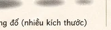
shadow
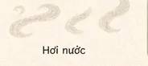